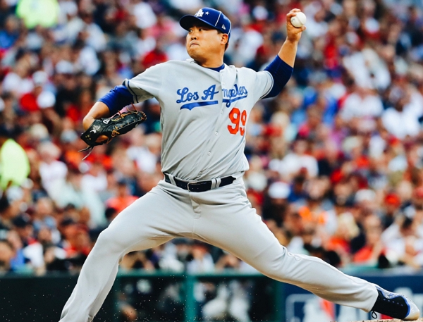

LA 다저스의 류현진 선수가 메이져리그 역사상 아시아 투수 가운데 최초로 메이저리그의 '사이영 상'을 수상할 유력 후보로 꼽힌다. '사이영 상'은 투수에게 최고 영예이며, 현재는 메이저리그 양대 리그에서 시즌마다 한 명씩 선정하는데, 미국 야구 기자들의 투표로 결정된다. 전통적 지표라 할 수 있는 다승보다는 평균자책점이나 대체선수대비 승리기여도(WAR) 같은 지표가 최근 수상 기준으로 꼽힌다. 실제로 지난해 내셔널리그 수상자인 뉴욕 메츠의 제이컵 디그롬은 시즌 승수가 10승이었지만, 1점대 평균 자책점을 기록하며 '사이영 상'을 거머쥐었다. 올해 '사이영 상' 경쟁 구도는 일찌감치 류현진과 디그롬의 2파전으로 좁혀진 상태. 지난해에 이어 올해도 막강한 '사이영 상' 후보로 꼽히는 디그롬은 탈삼진 같은 지표에서 류현진보다 비교 우위를 점하고 있다. 반면, 아시아 선수 최초로 사이영상을 노리는 류현진은 평균자책점 등에서 앞서 있는 상황. 류현진이 평균자책점 1위가 된다면, 지난 2013년 메이저리그에 진출한 후 7시즌 만에 처음 타이틀 홀더가 된다. 한국 선수 중 타이틀 홀더를 차지한 사례는 없다. 가장 근접했던 선수는 박찬호 선수다. 하지만 류현진에게 아킬레스건이 있었으니 바로 잦은 부상이다. 류현진이 메이저리그 진출 후 지난해까지 6년 동안 활용가능한 상태로 현역 로스터(AR·Active Roster)에 포함된 기간은 팀 공식 일정의 절반 정도 밖에 안된다. 나머지 절반은 부상 치료와 재활 기간이었다. 2013~2018년까지 다저스의 총 공식경기 기간(정규시즌과 포스트시즌)은 1220일. 이 가운데 류현진이 AR에 포함된 날은 51.2%인 625일이었다. 류현진의 연도별 AR 기간은 2013년 201일, 2014년 160일, 2016년 2일, 2017년 152일, 2018년 110일이었다. 수술을 받은 2015년엔 단 하루도 AR에 없었다. 만약 류현진이 평균자책점을 떨어뜨리거나 유지하고, 몸과 멘탈 관리와 컨디션 조절은 물론, 월드시리즈까지 잘 던져주고 그의 팀인 LA 다저스가 월드시리즈 우승을 하게 된다면 '사이영 상'을 수상할 가능성이 매우 크다고 생각한다.
